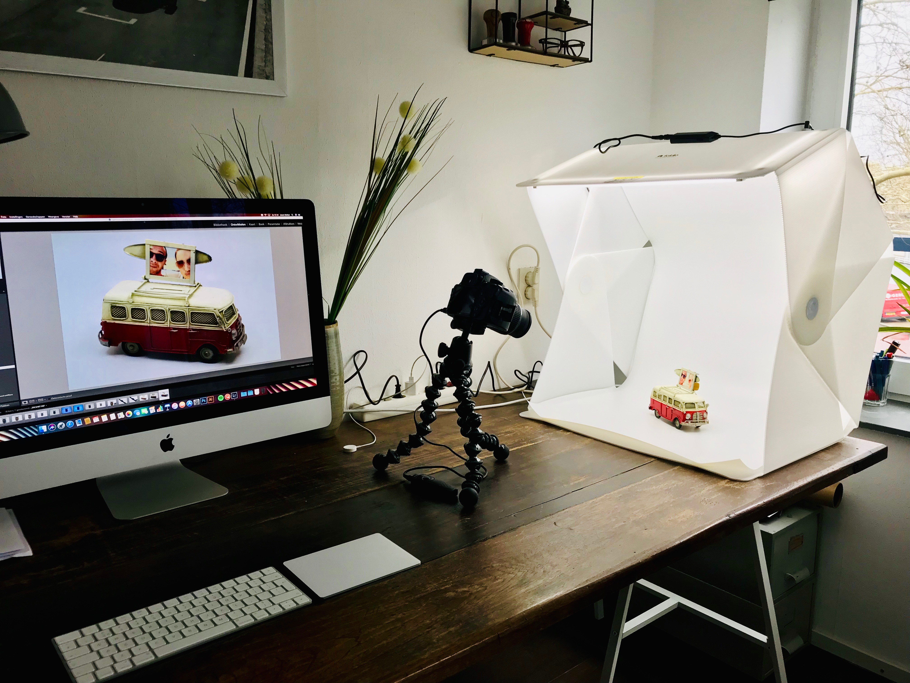

Hobby's
-
Product fotografie
Ik maak professionele productfoto's voor website en webshops.
-
Stadsfotografie
Rotterdam is voor mij een broedplaats als het gaat om creativiteit en dynamiek. Geweldig voor foto's. Check mijn EyeEm profiel voor meer foto's.
-
Barista Experience
Voor de koffie connaiseurs heb ik altijd lekkere koffie in huis en geef ik training en advies als barista trainer. Ook beschikbaar voor kleine evenementen als barista service!
-
Coffee Bar locator